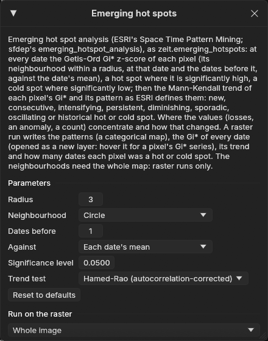
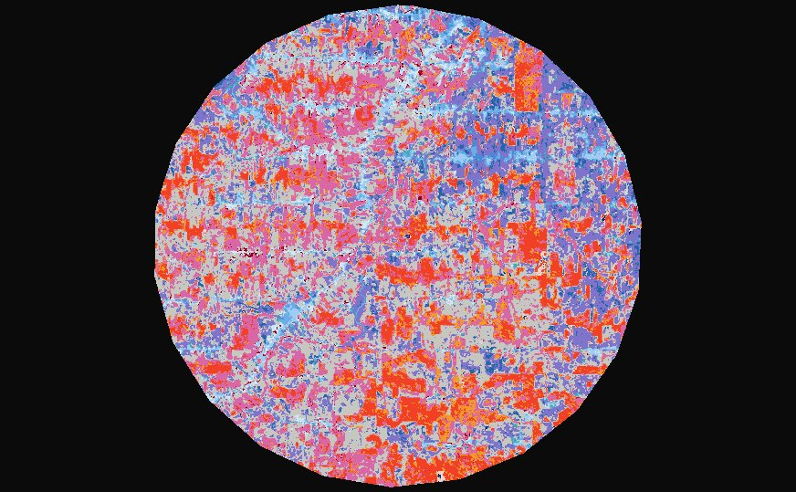
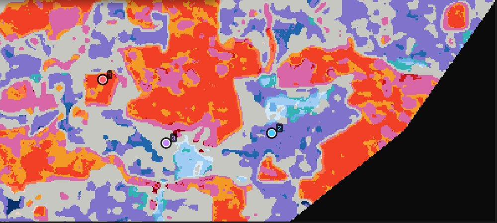
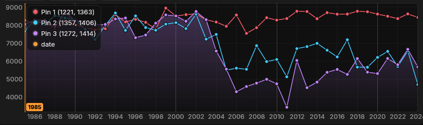
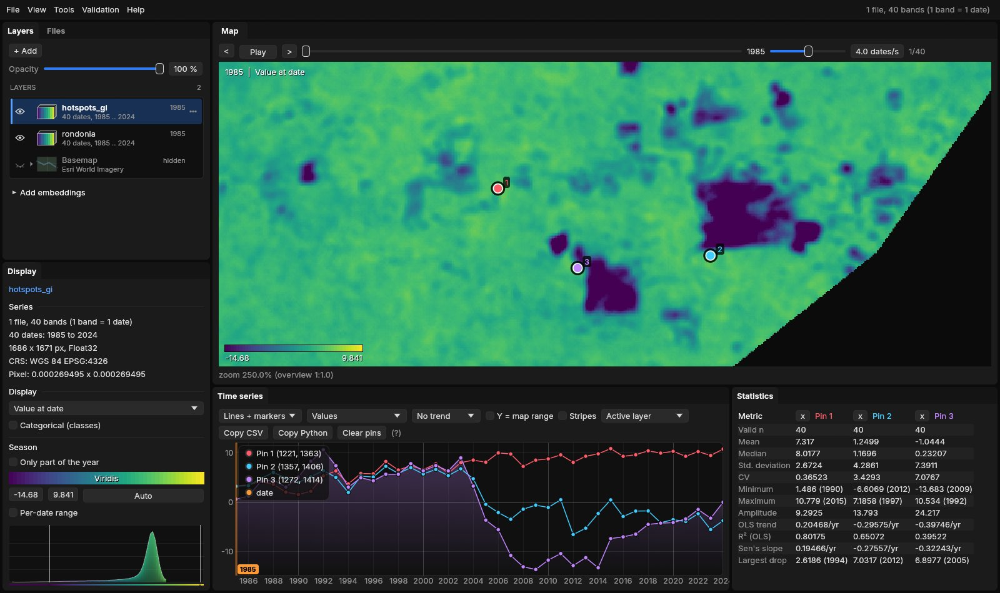
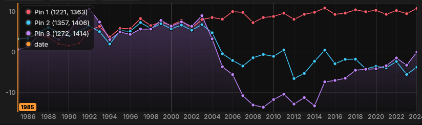
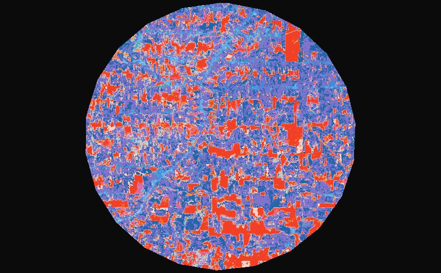
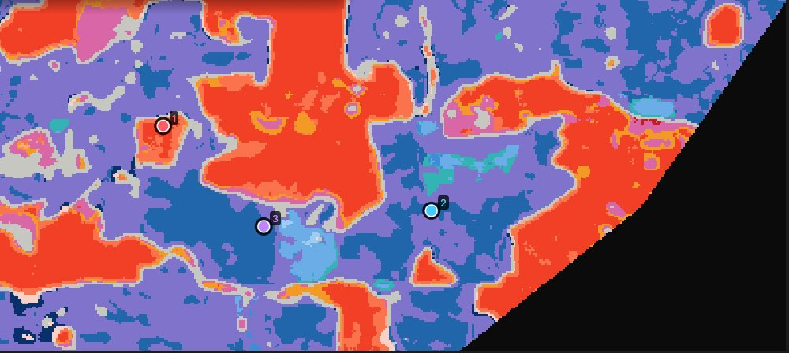

01The idea
Emerging hot spot analysis is ESRI's Space Time Pattern Mining tool, also available in R as sfdep's emerging_hotspot_analysis. It has two steps.
First, at every date, it computes the Getis-Ord Gi* of each pixel (Getis & Ord 1992). This statistic sums the values in the pixel's neighbourhood (the pixel included) and compares the sum with what the date's mean would give, as a z-score. A significantly positive Gi* makes the pixel a hot spot at that date, and a significantly negative one makes it a cold spot. The neighbourhood is the pixels within a radius, at that date and at the dates before it.
Second, each pixel's series of Gi* gets a Mann-Kendall trend test. Its dates as a hot or cold spot and its trend then give its pattern, as ESRI defines them.
- Gi*
- A z-score: how far the sum of a neighbourhood is from what the date's mean would give it. Beyond ±1.96 it is significant at 0.05.
- Hot / cold spot
- A date at which the pixel's Gi* is significantly positive / negative.
- Trend of the Gi*
- Whether the pixel's Gi* rises or falls over the dates (Mann-Kendall), which separates intensifying hot spots from diminishing ones.
- Pattern
- The pixel's history, summed up in one of 17 classes: no pattern, or one of eight kinds of hot spot and the same eight of cold spot.
The values can be anything that varies in space and time: an index, a loss, an anomaly, a count. The analysis needs the whole map (each pixel's neighbourhood), so it runs on the raster only, not on the chart.
02The example
The data of the LandTrendr guide: forty years of NDVI (× 10000), one composite a year from 1985 to 2024, over a circle of about 50 km in central Rondônia, Brazil. This is a forest frontier opened along roads and mostly cleared between 2000 and 2005. The stack is one GeoTIFF with a band per year, opened through a VRT that declares 0 (outside the circle) as no data. It covers 1686 × 1671 pixels of 30 m.
In NDVI, the forest is high and pasture is low, so the hot spots are clusters of forest and the cold spots are clusters of cleared land. The patterns tell how each one changed.
03Opening the tool

Tools → Emerging hot spots, among the trend tools. The tool needs at least three dates, and comes from Zeit, which is built into Janus.
04The parameters
| Parameter | Default | What it does |
|---|---|---|
| Radius | 1 px | The neighbourhood: the pixels within this distance, the pixel included. With 1 and a square these are its 8 neighbours (queen contiguity, sfdep's default). A wider radius finds wider clusters. |
| Neighbourhood | square | Square: (2 × radius + 1)² pixels. Circle: the pixels whose centres are within the radius. |
| Dates before | 1 | The earlier dates also in each date's neighbourhood (sfdep's k, ESRI's neighbourhood time step). With 1, each Gi* is smoothed with the date before it. |
| Against | each date's mean | Each date's mean (as sfdep): a place is hot compared with the others at that date. The whole series' mean: every date is compared with all of them, so a date that is high everywhere is hot everywhere. |
| Significance level | 0.05 | A Gi* is a hot or cold spot when its two-sided p-value is below this. The same level applies to its trend. |
| Trend test | Hamed-Rao | The test of each pixel's Gi* series. Consecutive dates share neighbours, so the series is autocorrelated, and Hamed-Rao corrects for that. Also: the original Mann-Kendall (ESRI's and sfdep's) and Yue-Wang. |
At 30 m, the default radius of 1 px measures clusters of 3 × 3 pixels, and the map comes out speckled by single fields. This guide uses a radius of 3 in a circle (pixels within 90 m) and keeps the other defaults.
05Running it
Under Run on the raster, choose the Whole image, the Visible area or the ROI, then Run. The run holds the values of the whole window in memory, along with their Gi*: about 40 bytes per value. If that would exceed 6 GB, Janus refuses and asks for a smaller area. Here the whole image, 40 dates of 2.8 million pixels, takes 4.2 GB, and it ran in 14 s, much of it spent reading the stack.
The outputs are GeoTIFFs in %LOCALAPPDATA%\Janus\results by default, opened as layers:
| Output | Meaning |
|---|---|
| Pattern | A class map of the 17 patterns, in the Hotspots colours. It is the layer shown after the run. |
| Gi* z-score | The Gi* of every date, as a new series layer, opened hidden under the patterns. |
| Trend of the Gi* (z) | The z of the trend test: positive where the Gi* rises. |
| Dates a hot spot | How many dates the pixel was a significant hot spot. |
| Dates a cold spot | The same for cold spots. |
06The patterns


Each pattern is tested on the hot dates first, then on the cold ones. The cold-spot patterns read the same way as the hot ones, with cold dates instead of hot dates. The last two columns give each pattern's share of the circle in this run.
| Pattern | Definition (hot; cold alike) | Hot | Cold |
|---|---|---|---|
| New | Hot at the last date, and only then. | 0.4% | 0.1% |
| Consecutive | Hot dates in a single run that reaches the last date, fewer than 90% of them. | 0.2% | 2.7% |
| Intensifying | Hot on 90% of the dates or more, the last one included, with the Gi* rising significantly. | 11.5% | 0.2% |
| Persistent | The same, without a significant trend. | 0.7% | 2.7% |
| Diminishing | The same, with the Gi* falling significantly. | 0.0% | 2.4% |
| Sporadic | Hot at the last date, hot on and off before, never cold. | 6.2% | 1.0% |
| Oscillating | Hot at the last date, hot on and off before, cold at some earlier date. | 21.9% | 16.9% |
| Historical | Hot on 90% of the dates or more, but not at the last. | 0.3% | 2.0% |
| No pattern | None of the above. | 30.7% | |
Everything depends on the last date. A pixel that was a cold spot for twenty years but not in 2024 has no pattern (unless it was cold on 90% of the dates, which makes it historical). Against each date's mean, the forest left standing becomes more distinct as the land around it is cleared. Its Gi* rises, so the large forest blocks are intensifying hot spots (red). The cleared land is mostly oscillating cold (purple): it was hot while it was forest, and cold since, with some years in between when it was not significantly cold.
07Reading a pixel




The patterns come from the Gi* series. The Gi* layer opens hidden under the patterns. Tick its eye in the Layers panel and the chart shows each pin's Gi* series:




- Pin 1 (1221, 1363) is a hot spot on 39 of the 40 dates, and its Gi* rises from about 3 to 10 (trend z 6.7): an intensifying hot spot.
- Pin 2 (1357, 1406) is a hot spot in 19 of the years up to 2004 and a cold spot at the end, but its cold years are broken by years near the date's mean (2008–2011, 2015, 2017–2018): an oscillating cold spot.
- Pin 3 (1272, 1414) is a hot spot for 18 years and a cold spot for 18, from 2005 to 2021 and in 2023. In 2024 its Gi* is −0.1: with its NDVI back to 0.57, it is no longer significantly below that year's mean. Not cold at the last date, and not cold on 90% of the dates: no pattern.
08Against the whole series
Against each date's mean, a place is only hot or cold compared with the rest of the map at that date. As the frontier opened, the mean NDVI fell, so the bar for a cold spot fell with it. Against: The whole series' mean uses one mean and one deviation for all forty years instead. The forest of 1985 is then hot everywhere, and the land cleared since is cold for good:




The cold spots now cover most of the circle: oscillating cold 37.3% and consecutive cold 15.8% (dark blue). The intensifying and persistent hot spots (15.2% and 4.3%) are the forest that still stands. Pin 3 becomes a consecutive cold spot: cold every year from 2005 to 2024, in one run. Pin 2 stays oscillating, because its Gi* of 2009 (−1.7) breaks the run. Pin 1 is still intensifying, hot at every date.
Which to choose
Each date's mean asks where values cluster compared with the rest of the map at that date, which is sfdep's question. The whole series' mean asks where they cluster compared with the whole period, so a change that affects everything shows up everywhere. With a lag (dates before), the Gi* of a date also counts earlier dates against that date's mean, so a rise everywhere lowers it.
The Gi* equals R sfdep's (0.2.5, queen neighbours, k the lag) to 1e-14, and the trend test equals Kendall's to its single precision. The patterns follow ESRI's definitions with the normal p-values of the Gi*. sfdep's differ: it takes each Gi*'s significance from 199 permutations and has rules of its own. On a grid of 50 × 50 cells and 12 dates, sfdep takes 13 minutes (28 s with 9 permutations); Zeit takes 4 to 7 ms.
09What next
- Hot spots of change, not of state. Run the analysis on a series of yearly losses (the drop of the index from one year to the next) or of anomalies, to find where the changes themselves concentrate.
- Test a region's trend. The trend test guide asks whether a whole region is trending, taking the spatial correlation of its pixels into account.
- The events behind the patterns: LandTrendr on the same series maps the year and magnitude of each clearing.
- Script it. The same analysis is
zeit.emerging_hotspotsin Python.
10References
- Getis, A., Ord, J. K. (1992). The analysis of spatial association by use of distance statistics. Geographical Analysis, 24(3), 189–206.
- Ord, J. K., Getis, A. (1995). Local spatial autocorrelation statistics: distributional issues and an application. Geographical Analysis, 27(4), 286–306.
- Esri. How Emerging Hot Spot Analysis works. ArcGIS Pro documentation, Space Time Pattern Mining toolbox.
- Hamed, K. H., Rao, A. R. (1998). A modified Mann-Kendall trend test for autocorrelated data. Journal of Hydrology, 204, 182–196.
- Parry, J., Locke, D. sfdep: Spatial Dependence for Simple Features. R package.
- Zeit: the change detection library behind the tools of Janus.